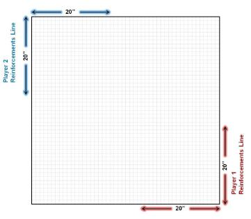

Steamroller 2012 (SR2012) provides an official format for Tournament Organizers (TOs) of WARMACHINE and HORDES events. We realize that not all communities are the same, so we have compiled this appendix to provide official variants to specific areas of the SR2012 document.
These variants can be used to alter a single rule, or they can be combined to form a more casual or competitive format based on the preferences of the players, the needs of the venue, or event time constraints. No matter what choices you make, any combination of variants from this document will constitute an official SR2012 tournament format.
Variant rules are available for the following sections of the SR2012 rules:
This document will revisit several rules areas of the SR2012 document. A review of the baseline version of a rule will be listed followed by variant keyword(s) and the description of the variant(s). Not all sections of the SR2012 rules document have variant options. For example, players must always practice good sportsmanship, so no variants are available for playing outside the sportsmanship parameters set forth in the baseline SR2012 rules.
SR2012 appendix variants make it easy for an EO to tailor events to the needs of his/her player community. By using the appropriate variant keywords, players can reference this document for details, which will help keep pre-tournament announcements concise.
Second list optional. All lists are subject to the same point constraints and must be led by warcasters/warlocks from the same faction. Players cannot include the same version of a model or unit with FA: C in more than one list.
Players must bring exactly X army lists and must play each army list at least once during the event.
Different versions of the same character model/unit cannot be included in more than one of a player’s lists. (Example: A player cannot include Alexia, Mistress of the Witchfire in one list and Alexia Ciannor & the Risen in another.)
Players can include only the most recent incarnation of a given character model/unit in any of their army lists. (Example: A player can include Alexia, Mistress of the Witchfire in one of his army lists but cannot use Alexia Ciannor & the Risen at this event.)
Models/units with FA: C can be included in more than one list.
Players must use a Theme Force of Tier X or higher in all lists. Models/units with FA: C can be included in more than one list (if included in more than one Theme Force).
The EO will announce the expected number of rounds to be played at the beginning of the tournament. Divide the number of rounds to be played by the required number of lists for each player. The result (rounded down) is the number of times each list must be played during the tournament. Divide and Conquer events must use the X Lists Required variant.
Example: If a tournament requires that each player brings two army lists and has five rounds, then each player would have to play each list at least twice (4 divided by 2). In this variant a player must inform his opponent if he has no choice of which warcaster or warlock he must play prior to a game. If a player receives a bye he must choose a list to use for the bye round.
Painted armies are not required.
All models must be primed and basecoated. Players must present the intended final color scheme on all parts of the model. Bases can be unfinished. Hardcore Painting Required – For Hardcore tournaments, all the Steamroller ?Modeling and Painting? and ?Conversions? rules apply. In addition, all models must be completely painted. This means that every model must be painted with a reasonable diversity of color. Individual elements of the miniature must be distinguishable by color or shading. For instance, flesh must be a different color than hair or clothing; metal should be a different color than leather. The base is part of the model, so don't neglect it! Bases must be finished with sand or flock or otherwise modeled and painted.
Models that do not meet these requirements will not be eligible for play. Whether a model is completed is the decision of the event organizer. As a general rule, if someone feels the need to justify why a model is completed, it probably isn’t. In order to be eligible for any prizes that are awarded based on quality and technique the owning player must paint all presented models themselves.
All players participate in every round. Play a number of rounds required to determine a clear winner.
This tournament will have no more than X rounds regardless of the number of players. This type of event can end before X rounds if there is one player with more tournament points than any other player at the end of a round.
The X-Round Event variant can be paired with a Final Standings variant when the number of rounds is reduced below the number of rounds recommended in the SR2012 core rules.
Basic round times are randomly decreased or increased by a variable (d3 × extension length) that is not revealed to players. During each game, one turn extension is allowed for each player. Dice down is called when round time is complete.
Games are untimed. A round continues until all players have completed their games.
Use the baseline round, turn, and extension length of an event two sizes higher.
Use the baseline round, turn, and extension length of the event with the nexthigher point size.
Use the baseline round, turn, and extension length of the event with the nextlower point size.
Use the baseline round, turn, and extension length of an event two sizes lower.
The allowance of one turn extension per game is removed.
Instead of timing each turn, chess clocks will be used. Baseline round times with no variable are used, but the chess clock replaces the turn length. Each player’s clock will be set based on the following equation:
Base round time × 0.53 = Player clock total (rounded up to the nearest minute)
When a player moves a model, rolls dice, or takes significant time to make decisions during the other player’s turn, the player whose turn it is has the option of switching to the opponent’s time on the chess clock while these actions are resolved.
When chess clocks are used, a player must take meaningful turns, fully activating all his models, or risk disqualification. If a player’s clock runs out of time, that player loses the game.
Use the Chess Clocks variant. Additionally, dice down will not be called in any round.
For each round, the EO selects a scenario that all players will play. The EO keeps scenarios secret until the start of each round of games.
The listed scenarios or scenario groups that will be played at the event are revealed to all players prior to the event. This information might also include the order in which the scenarios will be played.
The Kill Box artifice will be removed from all scenarios played at the event.
The Reinforcements artifice will be removed from all scenarios played at the event.
Scenarios with objectives will not be played at the event or objectives lose all abilities except for "Objective." The "Guidons" scenario cannot be played when this variant is used. Objectives are considered friendly models to all other models.
Add a warcaster or warlock to the reinforcements section of your army list(s). Warjack/warbeast points for the warcaster/warlock are added to the reinforcements total. Reinforcement warcasters/warlocks are granted 5 additional warjack/warbeast points. The army is still counted as having a standard FA for the base point size of the game.
If a player is using a Theme Force, the second warcaster or warlock must be chosen from the same faction. Mercenary players must choose from a contract that allows the primary warcaster(s). Minion players must choose from a pact that allows the primary warlock(s). All other reinforcement modelsfollow the baseline reinforcement rules for Theme Forces.
The listed artifices will be added to all eligible scenarios played at the event. Reinforcements cannot be added to radial scenarios; use the reinforcements line diagram below to add a reinforcements line to any non-radial scenario.
Assassination Victory, Scenario Victory, Control Points Tiebreaker, Army Points Remaining Tiebreaker, Army Points Destroyed Tiebreaker.
This event does not use ’Caster Kill as a scenario win condition. When a warcaster or warlock is destroyed, the game continues until a scenario victory is achieved or one player has no models remaining.
This event will not use tiebreakers. If time expires the game is a tie.
If there is no clear winner at the end of the tournament, use the Strength of Schedule tiebreaker followed by Control Points and then Army Points Destroyed.
In larger events, players dropping out of the tournament adversely affect their opponents’ strength of schedule. If there is no clear winner at the end of an event using large event scoring, count the tournament points scored divided by the number of games played by each opponent of the tied players. For an opponent who did not score any tournament points, use a value equal to 1 divided by the total number of rounds in the event.
For example, after four rounds Jason and Doug are tied for second place. To break the tie, the EO adds up the tournament points and divides by the number of games played by Jason's opponents during the previous four rounds. The EO does the same for Doug's opponents and compares the total to break the tie.
The player whose opponents have the highest total score has the best strength of schedule score and earns the higher rank. If strength of schedule is the same for both players, go to Control Points and then Army Points as normal.
If there is no clear winner at the end of a tournament, use the total number of enemy army points destroyed or removed from play during the tournament as the tiebreak condition (followed by Control Points and then Strength of Schedule, if needed). The method below should also be used to determine awards based on army point destruction. Points are scored each time a model/unit is destroyed/removed from play (For example, For example, if Thagrosh, Prophet of Everblight returned a Scythean to play using Dark Revival, the opponent earns 9 points for each time he destroyed the warbeast).
When counting destroyed army points each round use the following methods:
When calculating model value, use the values printed on the model/unit¡¦s card even if that model/unit was brought into the army via other means (such as Dark Industries) or if the models received a discount during army-building (such as the Call of the Wild Tier 4 Theme Force benefit).
When creating match-ups for the final round of an event, the TO pairs the current top four players on two "finals tables" The first finals table matches the current first-ranked player against the current second-ranked player. The second finals table matches the current third-ranked player against the current fourth-ranked player.
The winner of the first finals table wins the event, and his opponent wins second place. The winner of the second finals table wins third place. Standings beyond third place should be calculated using Strength of Schedule followed by Control Points in the case of a tie.
The Finals Tables variant should be used only in events that are planned for the number of rounds recommended in the Steamroller 2012 rules based on player attendance, and it cannot be combined with any other Final Standings variant. Also, this is not a preferred variant, as it places the luck of the draw (as to when someone lost to the champion) above game-related scoring metrics such as opponent difficulty, control points, army points, and assassination.
TOs should always consider the best way to run events for their players given the resources they have available. These resources include a place to run the event, the amount of time available, tokens to mark the corners or center of scenario zones, timers, and so on. For example, if you have limited time per day at the venue, you might want to consider running a larger event over two days.
Use the variants provided in this appendix to run an event that best fits the resources you have available as well as the preferred play style of your players.
By varying the SR2012 Appendix rules in use, the standard Steamroller format offers a diversity of formats to create a unique combination of tournaments at a convention or weekend event. See below for an example of a three-day event. Please take note of the thematic names attached to each event; these small touches can be used to inspire players’ lists, generate unique prize ideas, and build excitement.
SR2012 Appendix rules:
SR2012 Appendix rules:
SR2012 Appendix rules:
WARMACHINE and HORDES Masters and Hardcore tournaments are held to a higher standard than other Steamroller tournaments, and certain requirements must be met in order to host one at a convention or event. First and foremost, all Masters and Hardcore tournaments must be pre-approved by Privateer Press. All the requirements below must be met in order to qualify for an officially sanctioned Masters or Hardcore tournament, and only approved tournaments will receive Masters trophies or Hardcore medals for prize support.
If your Masters tournament contains qualifiers, the total number of players in the qualifiers must be a minimum of 32 distinct players. For instance, it is acceptable to have two Masters tournament qualifiers with 16+ distinct players and a final Masters tournament of 8 distinct players seeded from the two qualifier tournaments.
* If your Masters tournament contains qualifiers, the total number of players in the qualifiers must be a minimum of 32 distinct players. For instance, it is acceptable to have two Masters tournament qualifiers with 16+ distinct players and a final Masters tournament of 8 distinct players seeded from the two qualifier tournaments.